|
Picture Page 2
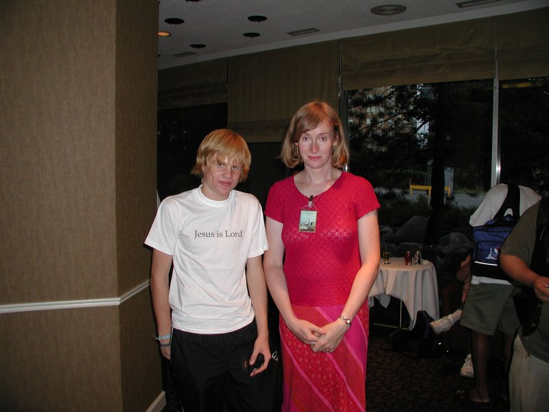
David Wesley from Sweden. David placed 3rd in the main speedcubing 3x3x3 event and 2nd in 4x4x4 and 5x5x5.
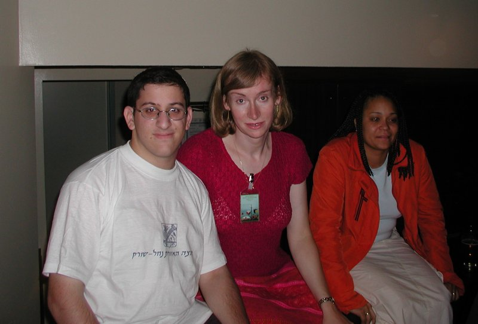
Dror Vomberg from Israel won the blindfold event. From left: Dror, Jessica, and Yasmara.
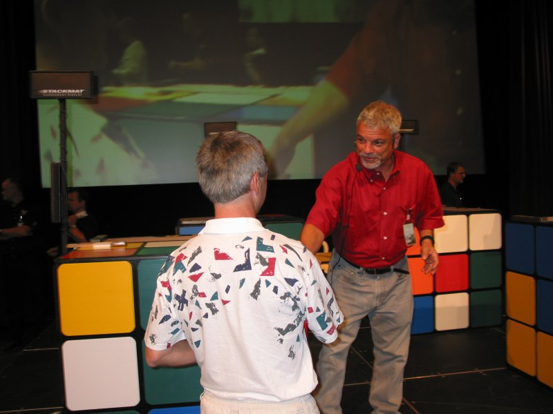
Mirek Goljan is the master of solving the 3x3x3 cube in the fewest number of moves without the help of computers. Mirek usually needs a few hours to solve the cube in mid 20's. His shortest solve at the competition had 29 moves, which got him the first prize.
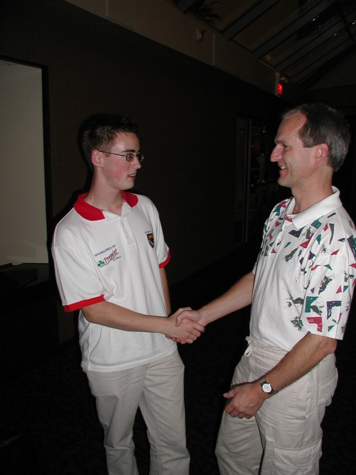
Dan Harris and Mirek Goljan.
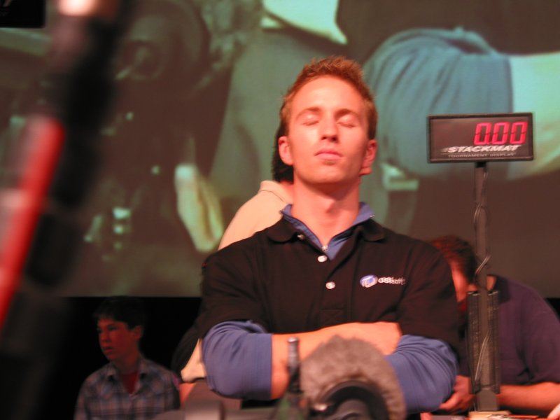
The winner of the main 3x3x3 speedsolving event, Dan Knights. Dan is trying to concentrate before his last fifth attempt in the finals.
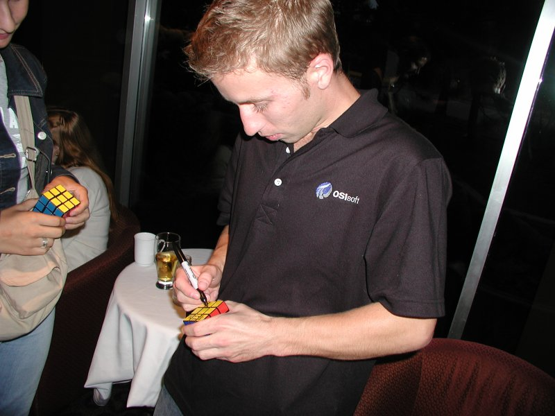
Dan Knigths.
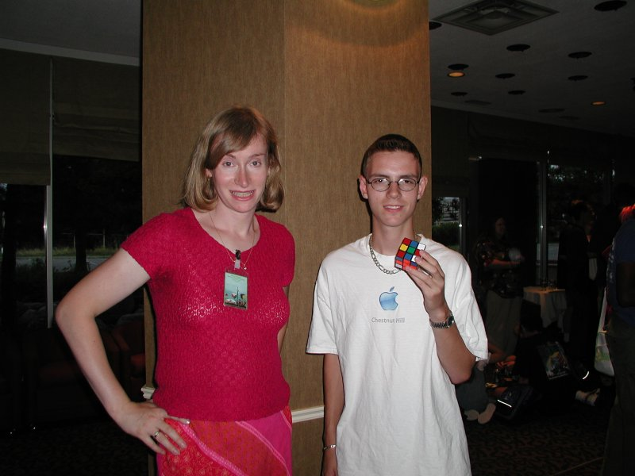
Jessica and Andy Camann. Andy is one of the fastest cubers in the world, averaging an unofficial 16.3 sec.
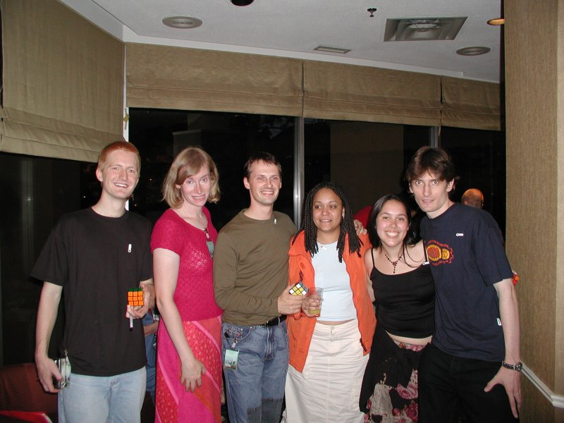
At the dinner reception. Chris Hardwick, the winner of the one-handed event, myself, Michiel van der Blonk and his wife Yasmara, Jasmine with her boyfriend.
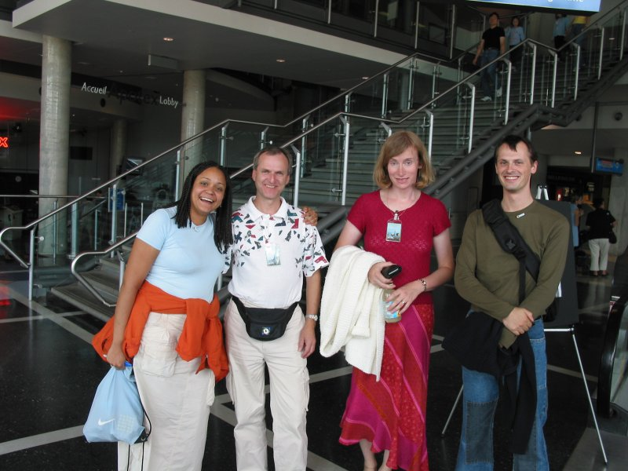
Yasmara, Mirek Goljan, Michiel van der Blonk at the entrance to the Science Center.
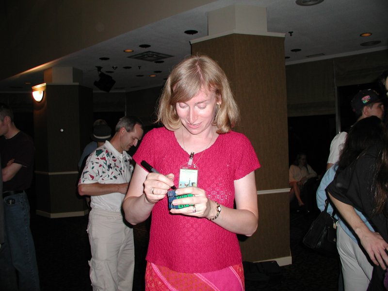
Hmm, when was the last time I signed my name so many times in two days. Let me count ... oh, yes,
21 years ... :)
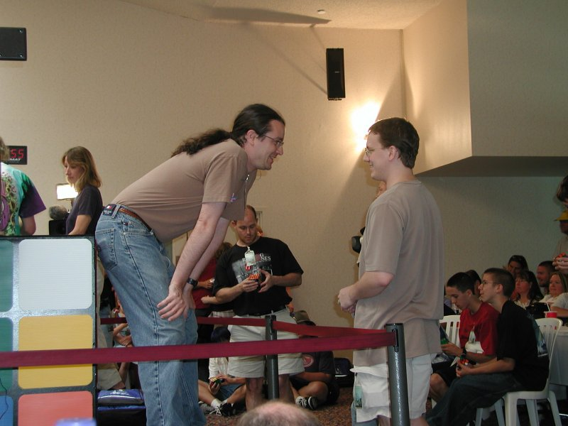
David Barr and Grant Tregay exchanging tips. Grant won the Megaminx discipline with time 2:12.82.
|